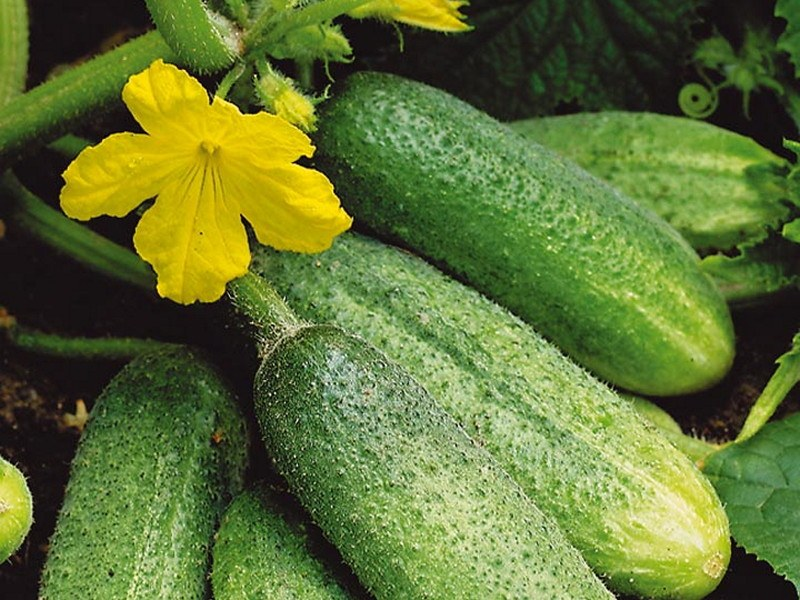

Спэлый агурэц!!!
 Самый сочный агурэц! Тэплица делал Ашот, зэмля паливал всегда.
Можна в салат, лучше свежий есть так.
В салат нада дабавлять наш памидорка и лук!
Если так сдэлаещ, патом спасиба скажищ!
Есть малэнький, есть балшой! Стоит не дорага! Скитка сделаем. Многа витамин.
Кило 70 рублей!